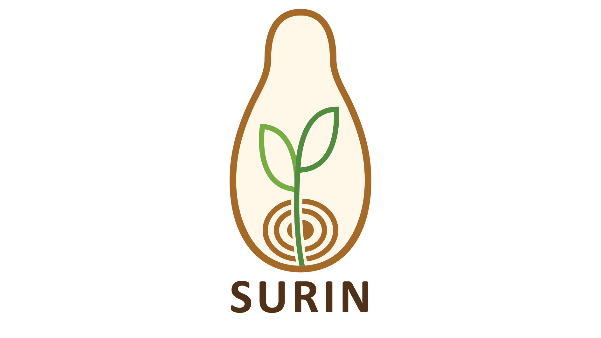
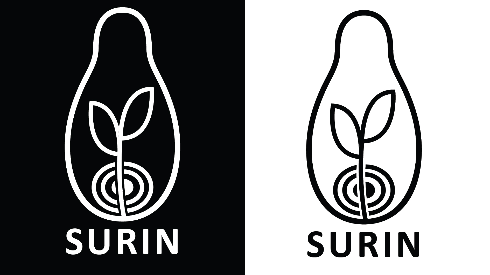
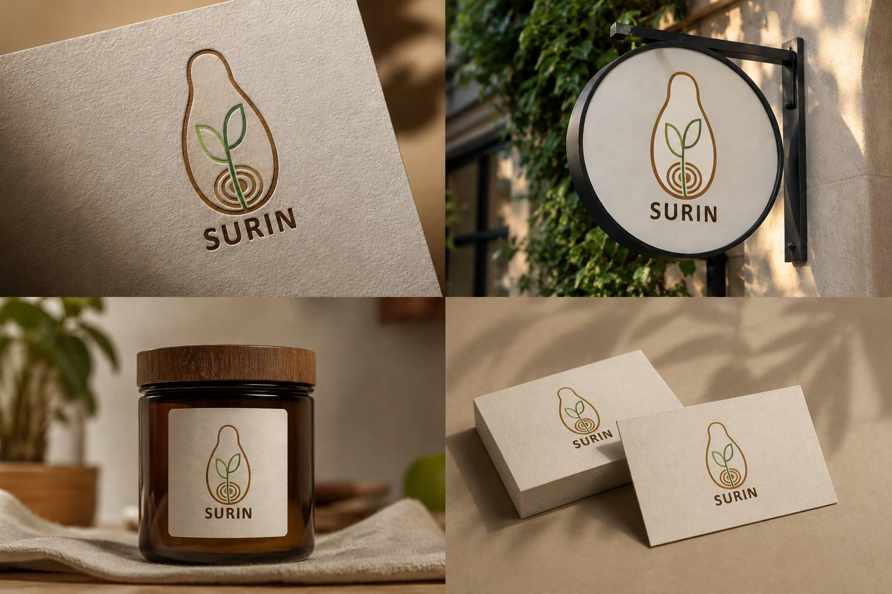

SURIN
Minimal · Natural · Distinctive

Project
Overview
SURIN is a conceptual logo design project developed as an exploration of a minimal, natural and contemporary visual direction. The identity focuses on creating a simple and distinctive mark with a calm, refined character.
Simple by
intention.
The concept explores the relationship between simplicity and organic form. The visual language was kept clean and restrained to create a mark that feels natural, memorable and easy to recognize.
The Mark

One mark.
Different contexts.

In Context
A selection of mockups showing the logo applied in visual contexts and exploring its potential use beyond the primary mark.
